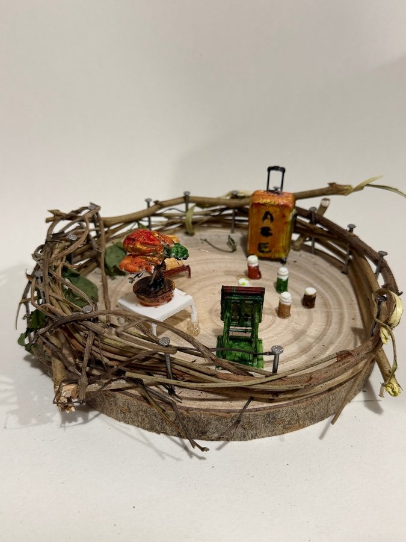

本網站為藝術科技項目之詮釋性預測（築巢 Weaving Home 藝術詮釋），並非心理／臨床診斷。


修正版頂視圖顯示，圓木底由枝條同釘圍住；金橙色行李箱喺右上，白色小桌連橙紅、綠色盆景喺左下，小瓶群散喺中央，深綠色直立物件喺右下，左邊另有一塊綠色葉片。實景相係斜角拍攝，右下物件睇落既似有層板嘅小書架，亦似靠背椅；以下會沿用修正版「綠色書架」呢個名稱，但用途未能確認。
巢嘅頂視圖
修正版頂視圖顯示，圓木底由枝條同釘圍住；金橙色行李箱喺右上，白色小桌連橙紅、綠色盆景喺左下，小瓶群散喺中央，深綠色直立物件喺右下，左邊另有一塊綠色葉片。實景相係斜角拍攝，右下物件睇落既似有層板嘅小書架，亦似靠背椅；以下會沿用修正版「綠色書架」呢個名稱，但用途未能確認。
屋企嘅人
呢個巢將一張小桌、幾個瓶、收納物同一件直立傢具分散擺開，較似為一個人或人數唔多嘅屋企保留基本生活位置。行李箱佔咗明顯空間，而桌面盆景亦被細心放好，令人聯想到屋企人既要方便執拾，又想留低一點日常情趣。不過，相片冇人物或身份資料，人數同關係只可以當成藝術想像，唔係事實判定。
性格
佈置畀人一種實際、細心又肯動手做嘢嘅感覺：枝條被逐層繞好，瓶仔按位置分開，鮮色行李箱、綠色傢具同盆景亦有清楚對比。呢種視覺語言可以讀成重視秩序，同時唔想生活只得功能，仍然會用顏色同植物感裝飾空間。呢個只係由作品形式引伸嘅性格想像，唔係心理評估。
動機
作品似乎想將「可以帶走嘅家」同「有邊界嘅家」放埋一齊：行李箱講流動，枝條圍欄講包圍，而桌、盆景同瓶仔就將普通生活重新放返入圈內。創作動機或可理解為，無論環境點變，都想保留一套自己認得嘅小日常。呢個係藝術層面嘅閱讀，唔代表創作者真實搬遷經歷。
需求
畫面最直接呈現嘅需要包括收納、放置細物、可使用嘅平面，同埋一個清楚界定嘅私人範圍。行李箱提供收納意象，小桌同直立綠色物件提供生活功能，盆景與葉片就令硬物之間有自然感。小瓶究竟係飲品、調味、藥物定裝飾，單憑外觀分唔到，所以只宜理解為要被妥善擺放嘅日用品。
經歷
由物件組合出發，可以想像一段「執好重要嘢，再重新安頓」嘅經驗：大件行李同幾件細小日用品並存，好似將生活濃縮成可管理嘅單位；手繞枝條亦帶出慢慢修補同建立邊界嘅過程。不過畫面本身證明唔到曾經搬屋、旅行或服藥，相關故事只係創作閱讀，唔可以當成個人歷史。
證據摘要
| 物件 | 推論 |
|---|---|
| 圓木底、枝條同一圈金屬釘 | 實際形成清楚邊界；藝術上可讀成保護同歸屬。 |
| 金橙色拉桿行李箱 | 可見收納同移動意象，但證明唔到真實搬遷。 |
| 白色小桌與橙紅、綠色盆景 | 為場景加入桌面活動同自然裝飾感。 |
| 四個左右、顏色不同嘅小瓶 | 顯示細物被集中保留；實際用途無法辨認。 |
| 右下深綠色直立物件 | 修正版標作書架，實景亦可能似椅或小櫃，功能有歧義。 |
| 左側綠色葉片 | 貼近巢邊，令天然材料同家居物件互相連接。 |
信心同限制
對行李箱、桌、盆景、瓶群同巢圈位置嘅觀察信心較高；對屋企人數、性格、動機同經歷嘅信心低。最大限制係實景相為斜角，而修正版頂視圖把深綠色物件標成「書架」，實景外形亦可被睇成椅或小櫃；瓶仔用途亦未知。全文只係藝術詮釋，非身份判斷、心理或臨床診斷。